Flankenanalyse
RiseTime
Zusammenfassung
Bei einem stufenförmigen Signal bezieht sich auf die Zeit, die für ein Signal erforderlich ist, um von einem festgelegten niedrigen Wert auf einen festgelegten hohen Wert zu wechseln (oder von einem festgelegten hohen Wert auf einen festgelegten niedrigen Wert). Mit Origins Hilfsmittel Flankenanalyse können Sie grafisch eine rechteckige Fläche auswählen, die eine ansteigende oder abfallende Stufe im Signal einschließt, und darauf die Anstiegszeit bzw. die Abfallszeit für diese ausgewählte Stufe berechnen.
Was Sie lernen werden
In diesem Tutorial lernen Sie, wie Sie:
- mit dem Minitool Flankenanalyse die Abfallszeit berechnen.
- die Einstellungen für die Berechnung der Abfallszeit ändern.
- die Anzeigeelemente für das Diagramm festlegen.
- die gewünschten Ausgabeoptionen auswählen und das Ergebnis in dem Arbeitsblatt ausgeben.
Schritte
- Öffnen Sie eine neue Arbeitsmappe. Wählen Sie Hilfe: Ordner öffnen: Sample-Ordner ... im Menü, um den Ordner "Samples" zu öffnen. Öffnen Sie in diesem Ordner den Unterordner Signal Processing. Dort befindet sich die Datei Step Signal with Random Noise.dat. Ziehen Sie diese Datei per Drag&Drop in das leere Arbeitsblatt, um sie zu importieren.
- 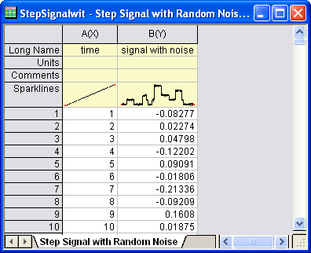
- Markieren Sie Spalte B und erstellen Sie ein Liniendiagramm, indem Sie im Menü Zeichnen: Einfache 2D: Liniendiagramm wählen.
- 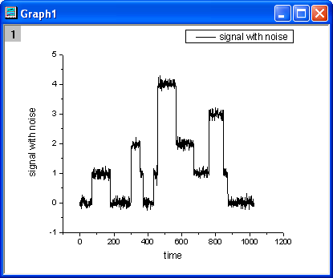
- Klicken Sie auf die Schaltfläche Achsenskalierung vergrößern () auf der Symbolleiste Hilfsmittel und wählen Sie dann einen Bereich entlang der X-Achse von 500 bis 700, so dass Sie sich auf diesen Teil der Zeichnung konzentrieren.
- 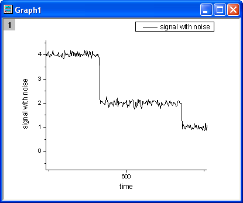
- Wählen Sie bei aktivem Diagramm im Menü Minitools: Flankenanalyse, um das Hilfsmittel aufzurufen.
- Klicken Sie im Dialog auf die Registerkarte Grafische Datenauswahl und setzen Sie X-Skalierung von auf 510 und Bis auf 650. Setzen Sie Hilfsmittel auf Abfallszeit und Methode auf Histogramm.
- 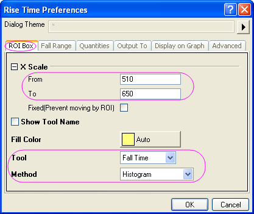
- Klicken Sie auf die Registerkarte Abfallsbereich und setzen Sie Von (%) der Stufenhöhe auf 20 und die Bis (%) der Stufenhöhe auf 80.
- 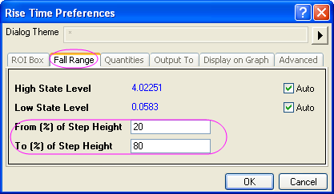
- Aktivieren Sie auf die Registerkarte Eigenschaften nur die drei Kontrollkästchen: Datensatzname (Name), Abfallsbereich (dVref) und Abfallszeit (dT).
- 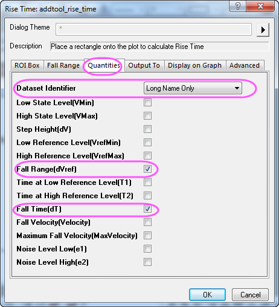
- Gehen Sie zur Registerkarte Ausgabe in, deaktvieren Sie Skriptfenster und aktivieren Sie An Arbeitsblatt anhängen.
- 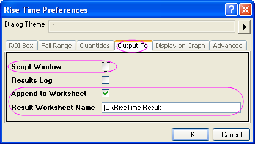
- Klicken Sie auf die Registerkarte Auf Diagramm anzeigen, erweitern Sie den Zweig Indikator und ändern Sie die Randfarbe in Blau. Aktivieren Sie Abfallsbereich.
- 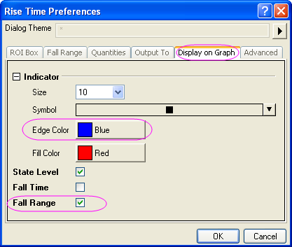
- Klicken Sie auf die Schaltfläche OK, um dem Diagramm das rechteckige Objekt der grafischen Datenauswahl (ROI) hinzuzufügen.
- 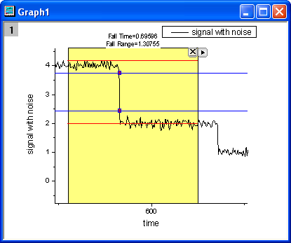
- Wie im oben stehenden Bild gezeigt, kennzeichnen die zwei roten horizontalen Linien die obere und die untere Stufe. Der vertikale Abstand zwischen den beiden blauen Linien ist der Abfallsbereich, der durch zwei Indikatorpunkte im Liniendiagramm angezeigt wird. Oben im Rechteck werden Abfallszeit und Abfallsbereich angegeben.
- Klicken Sie auf die dreieckige Schaltfläche oben rechts in der grafischen Datenauswahl (ROI), um ein Menü zu öffnen, und wählen Sie die Option Position der ROI festlegen, so dass das gelbe Rechteck der grafischen Datenauswahl fest positioniert wird.
- 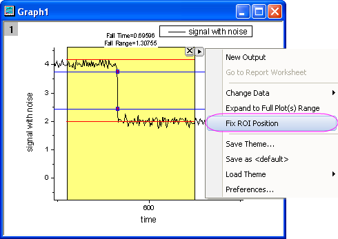
- Rufen Sie erneut das Kontextmenü auf und klicken Sie auf Neue Ausgabe, um die Ergebnisse auszugeben. Öffnen Sie das Menü erneut und wählen Sie Zum Berichtsblatt gehen.
- 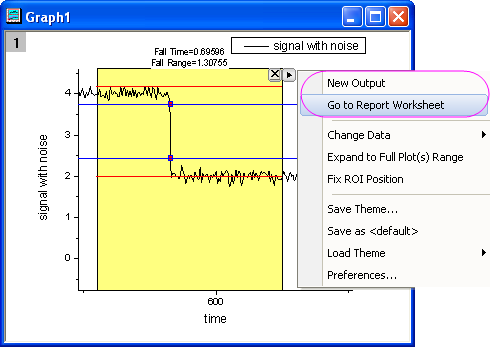
- Das Berichtsblatt wird aktiviert. Sie können sehen, dass die drei auf der Registerkarte Eigenschaften ausgewählten Parameter im Bericht aufgeführt sind.
- 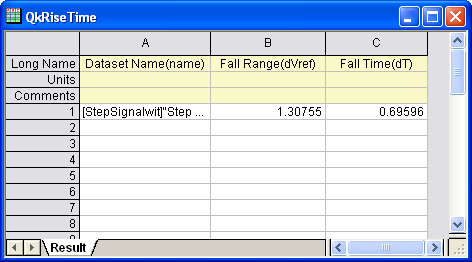